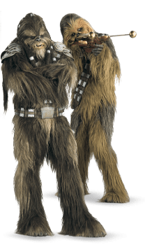

Wookiee

Tratti dei wookiee
| Aumento dei punteggi caratteristica | Il punteggio di Forza aumenta di 2 e la Costituzione di 1 |
| Eta' | I wookiee raggiungono la maturita' a 40 anni e vivono fino a circa 400 anni |
| Allineamento | Tendente al lato chiaro della forza |
| Taglia | Media |
| Movimento | 9m |
| Artigli | I tuoi artigli vengono considerati un'arma naturale. I tuoi attacchi senz'armi infliggono 1d4 danni cinetici |
| Scurovisione | Vedi 18m attraverso luce fioca come se fosse luce intensa e nell'oscurita' come se fosse luce fioca. Nell'oscurita' non vedi i colori, solo gradazioni di grigio |
| Pelliccia | Quando non indossi alcuna armatura o ne indossi una leggera, la tua CA e' 13 + il modificatore di Destrezza. Inoltre, ottieni vantaggio nei tiri salvezza su Costituzione contro l'esaurimento causato dal freddo estremo |
| Stazza Prestante | La capacita' di carico, spingere, trascinare o sollevare un peso vengono duplicate. Se sono gia' duplicate, allora triplicale |
| Arrampicata in Pianta | Velocita' di Scalare 7.5m. Ottieni vantaggio nei tiri salvezza su Forza e nelle prove di abilita' Forza (Atletica) che coinvolgono lo scalare |
| Linguaggi | Sai parlare, leggere e scrivere: Shyriwwok. Sei in grado di comprendere il Galattico Base ma non sai parlarlo |